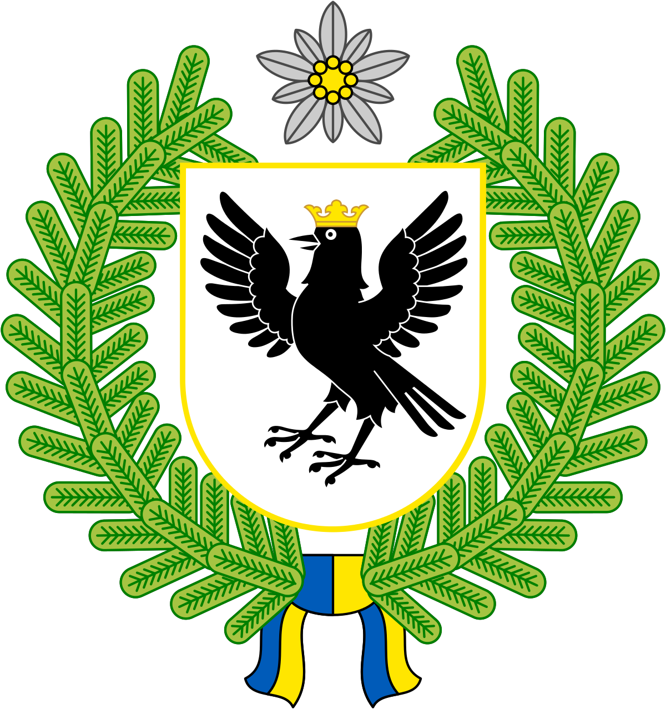
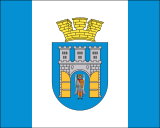
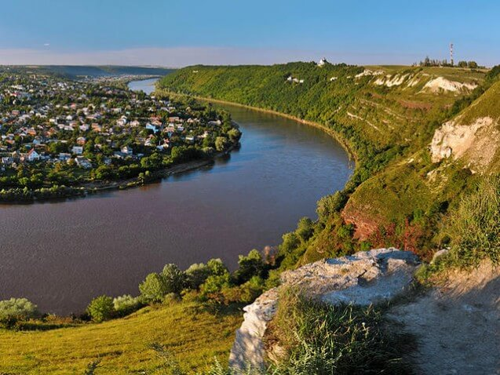
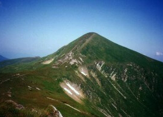
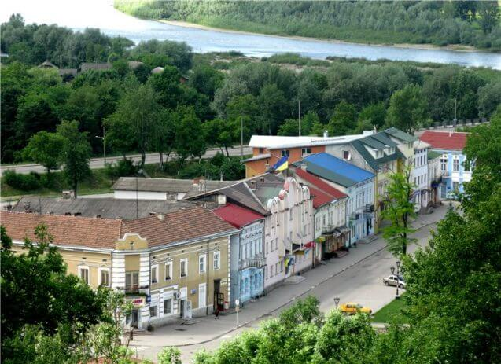

 
Дністер тече по каньйоноподібній долині, утворюючи багато фантастичних звивів – меандрів. Природа Дністровського каньйону своєрідна та неповторна. На його території близько 100 пам’яток живої і неживої природи світового значення, тут збереглися унікальні еталони відслонень гірських порід.
На Тернопіллі стверджують, що на їхній території – найцікавіші та найкрасивіші краєвиди берегів цієї ріки. Саме це і спонукало область подати Дністровський каньйон одним із номінантів на участь в акції «7 природних чудес України».
Сучасна назва Дністра веде свій початок з Київської Русі і означає «швидка вода». Древні греки називали ріку Тіріс, а пізніше Тірас. У римлян вона відома під назвою Данастріс, Данаструс. У турків – Турла.
Дністер має 386 приток. Головні з них: праві – Стрий, Свіча, Лімниця, Бистриця, Реут; ліві – Золота Липа, Cтрипa, Збруч, Смотрич. Русло Дністра звивисте. У верхній частині (до міста Самбір) – це типова гірська ріка, що тече по вузькій долині з обривистими скелястими берегами. Ширина русла у верхів’ї – не більше 40 м, в низов’ї – 100-240 м.
Спустившись з гір, Дністер тече широкою, місцями заболоченою рівниною, і течія його сповільнюється. Ріка тут тече по плоскогір’ю в невисоких, порослих вербами глинистих берегах, деколи утворюючи острови; вода каламутна, часто мілка. Потім підвищується спочатку лівий, а потім і правий берег ріки, русло стає кам’янистим, течія посилюється.
Нижче древнього Галича долина Дністра звужується до ~ 200 м. Високі скалисті береги Дністра тут поросли листяними лісами і кущами, з-під скал витікають численні джерела. В середній течії Дністра на поверхню виходять кристалічні породи – граніти, гнейси, сієніти, утворюючи подекуди невеликі пороги і перевали.
На Дністрі гори підходять так близько до ріки, що утворюють каньйон, руслом якого тече ріка. Типовий вигляд Дністровського каньйону – круті скелясті або заліснені береги, дика і неторкана природа, мальовничі острови. Потоки джерел в деяких місцях зриваються з кручі просто в річку, перетворюючись у живописні водоспади. Окремі частини скал нагадують швейцарський сир, весь у «дірках» від виходів печер і гротів.
У навколишніх селах зустрічаються пам’ятники культури різних народів, що в давнину населяли долину Дністра (церкви, костели, монастирі, палаци, руїни замків і фортець), зокрема печери, деякі з них служили монахам скельних монастирів.
Скельні відслонення на Дністрі , так звані «стінки» – пам’ятки природи, подібних до яких у світі практично немає. Тут знаходяться відомі у всьому світі відслонення (с. Стінка Бучацького і с. Трубчин Борщівського районів), які містять у собі давні скам’янілі рештки флори і фауни, яким близько 500 мільйонів років.
На Дністровських схилах є велика кількість рідкісних рослин, тварин, птахів. Теплий клімат у каньйоні відрізняє цю місцевість від інших територій Західної України. Стіни каньйону затримують сонячне тепло, через що влітку дощів тут майже не буває, а навесні зелень розцвітає на 2-3 тижні швидше, ніж в інших частинах області.
На відтинку близько 250 км можна зустріти понад десяток карстових печер і гротів, які знаходяться у вапняках. Їх химерний вигляд з рівня річкового плеса вражає. А невеликі водоспади – “дівочі сльози”, що збігають по зарослих густими мохами скелях, які зустрічаються по всьому маршруту, являють собою унікальне видовище.
Мальовничий ландшафт гірського типу, чарівні ліси, річка, водоспади, печери, химерні скелі, пташине різноголосся роблять Дністровський каньйон справді райським куточком природи.
Джерело: 7 чудес України
Справжньою природною прикрасою як Українських Карпат, так і всієї України є високогірний хребет Чорногора, у складі якого знаходится найвища точка України – гора Говерла (2061 м).
Хребет Чорногора є головним ландшафтним компонентом та популярним екскурсійним об’єктом Українських Карпат, який відвідують тисячі туристів, альпіністів і вчених з багатьох країн світу.
Найвища вершина цього хребта – гора Говерла, яка має правильну пірамідальну форму. Окрім Говерли, тут знаходяться ще чотири вершини, висота яких перевищує 2000 метрів – Чорна Гора (2028 м), Петрос (2020 м), Гутин Томнатик (2013 м), Ребра (2002 м).
Висота Говерли – 2061 метр над рівнем моря. У перекладі з мадярського ця назва означає “сніжна гора”. Вершина її насправді сніжна. Та й погода тут часто змінюється: сніг на Говерлі серед літа – не дивина. На схилах гори — форми плейстоценового заледеніння, каменепади. Бувають снігові лавини. Складається з пісковиків і конгломератів. Вкрита альпійськими луками, чагарниковими пустищами, подекуди — кам’яні осипи. Біля підніжжя — один з витоків Пруту, водоспад. Знаходиться у межах охоронної зони Карпатського заповідника.
Вершина Говерли являє собою невеликий плаский майданчик, який дає унікальну можливість любуватися навколишнім ландшафтом у радіусі 360°. З вершини Говерли прекрасно видно увесь чорногорський хребет, що простирається звідси на південний схід.
Комбінація зелених і синіх відтінків віддалених карпатських хребтів залишає в пам’яті людей, що побували на Говерлі, незабутнє враження. Звідси добре видно безліч гірських селищ, струмочків, озер, а також стежок, віялом сповзаючих з гір, що губляться в лісистих схилах.
Гора Говерла – популярний об’єкт літнього та зимового туризму, особливо в останні роки. Через популярність має високий рівень засміченості привершинної ділянки.
Основні маршрути на Говерлу включають сходження зі сторони т/б «Заросляк» (через так звану Говерляну), зі сторони урочища Козмещик та по гребеню Чорногірського хребта як зі сторони гори Петрос, так і зі сторони гори Пожижевська. Взимку альпіністським сходженням на Говерлу присвоєна категорія 1А.
Джерело: 7 чудес України
Галич — колишній центр Галицько-Волинського князівства — наймогутнішої твердині на південно-західних давньоруських землях, перша згадка про який відноситься, згідно з угорською хронікою XIII ст., до 898 року.
Галич веде свій відлік з кінця ІХ століття. У Х столітті галицькі землі входять до складу Київської Русі, але після Любецького з’їзду князів у 1097 році Галицьке князівство стає самостійним. В 1141 році Галич стає столицею князівства і зберігає цей титул до перенесення Данилом Галицьким столиці до Холму у 40-х роках ХІІІ століття.
Розквіт Галича та Галицького князівства припадає на період князювання Ярослава Осмомисла (1153-1187 рр.). Наприкінці ХІІ століття Галич стає столицею об’єднаного Галицько-Волинського князівства. В той час у Галичі розвивалися ремесла і торгівля, велося значне цивільне і церковне будівництво. Було складено першу половину Галицько-Волинського літопису.
1241 року княжий Галич цілком зруйнували монголо-татари хана Бату. Ймовірно, тому король Данило Галицький заклав Львів та переніс свій стіл (столицю) до Холма. Після того місто Галич занепадає і втрачає своє адміністративне і політичне значення.
У XIV столітті Галичем по черзі володіють Потоцькі, литовські князі, угорський король Людовік Анжуйський, аж поки місто не увійшло до Речі Посполитої зусиллями короля Ягайла у 1387 році, попередньо отримавши Магдебурзьке право (1367 рік).
Говорячи про давній Галич, ми маємо, насамперед княжий град поблизу сучасного села Крилос. На місті ж сучасного Галича знаходилася пристань на невелике торгово-ремісниче поселення. Саме тут, на високому пагорбі над Дністром у 1367 році розпочалося спорудження замку – головної твердині Галицького староства.
За іншими літературними даними, замок зведений в 1350-1352 рр. волинським воєводою Любартом. Спочатку це було дерев’яна споруда, яку оточували земляні вали. У другій половині XVI в. замок ще був дерев’яним. З 1590 по 1633 рр. на місто було здійснено 29 татарських нападів, найбільш руйнівні з яких були в 1594, 1612, 1624 роках. У 1621 році татари зруйнували замок, який незабаром був відбудований.
З замкової гори відкривається чудова панорама середмістя. Центр міста Галич розташувався у підніжжя замкової гори: маленький, але милий і симпатичний. На центральній площі 22 вересня 1998 року – у день святкування 1100-літнього ювілею Галича, відкрито пам’ятник королю Данилу Галицькому. Автори монументу – скульптор О. Пилєв та архітектор О. Чамара зі Львова. Поява пам’ятника саме на цьому місці не випадкова, адже історики вважають, що саме князь Данило сприяв появі площі на довколишніх купецьких кварталах.
Джерело: 7 чудес України